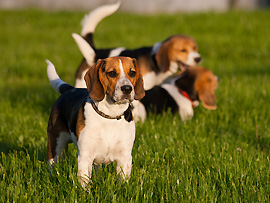

Razas Populares
-
 Beagle
El Beagle es una raza de perro pequeña y amigable, conocida por su nariz aguda y su naturaleza juguetona y cariñosa. -
 Bulldog
Bulldog
El Bulldog es una raza de perro de constitución musculosa, con una apariencia distintiva y una naturaleza cariñosa y calmada. -
 Chihuahua
Chihuahua
El Chihuahua es la raza de perro más pequeña del mundo, con una personalidad valiente, alerta y cariñosa. -
 Dachshund
Dachshund
El Dachshund, también conocido como perro salchicha, es una raza de cuerpo largo y patas cortas, conocida por su valentía y personalidad juguetona. -
 Pastor Aleman
Pastor Aleman
El Pastor Alemán es una raza de perro inteligente y leal, reconocida por su fuerza, versatilidad y habilidades excepcionales en trabajos de protección y pastoreo. -
 Labrador Retriever
Labrador Retriever
El Labrador Retriever es una raza de perro cariñosa, amigable y altamente inteligente, conocida por su naturaleza juguetona y su capacidad para ser un excelente compañero y perro de trabajo. -
Miniature Poodle
El Miniature Poodle es una raza de perro pequeña y elegante, caracterizada por su inteligencia, lealtad y su distintivo pelaje rizado y denso. -
 Miniature Schnauzer
Miniature Schnauzer
El Miniature Schnauzer es una raza de perro pequeña, con barba y cejas características, conocida por su personalidad vivaz y alerta, además de ser un excelente compañero y guardián.

Lista de Razas
- Afador
- Afaird
- Affen Spaniel
- Affen Terrier
- Affen Tzu
- Affengriffon
- Affenhuahua
- Affenpinscher
- Affenpoo
- Affenwich
- Afghan Collie
- Afghan Hound
- Afghan Retriever
- Afghan Sheepdog
- Afghan Spaniel
- Afollie
- African Wild Dog
- Africanis
- Aidi
- Ainu Dog
- Airedale Terrier
- Airedoodle
- Akbash Dog
- Akita (American)
- Akita Inu (Japanese)
- Akita Shepherd
- Alano Español
- Alapaha Blue Blood Bulldog
- Alaskan Husky
- Alaskan Klee Kai
- Alaskan Malamute
- Alopekis
- Alpine Dachsbracke
- Alusky
- Ambullneo Mastiff